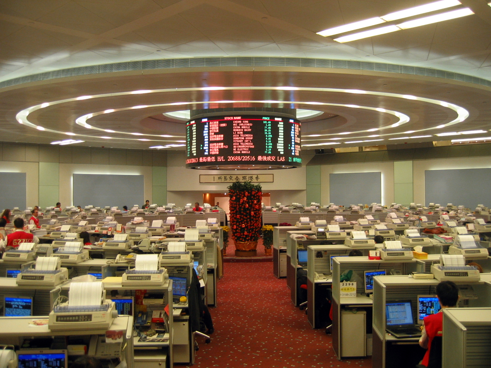
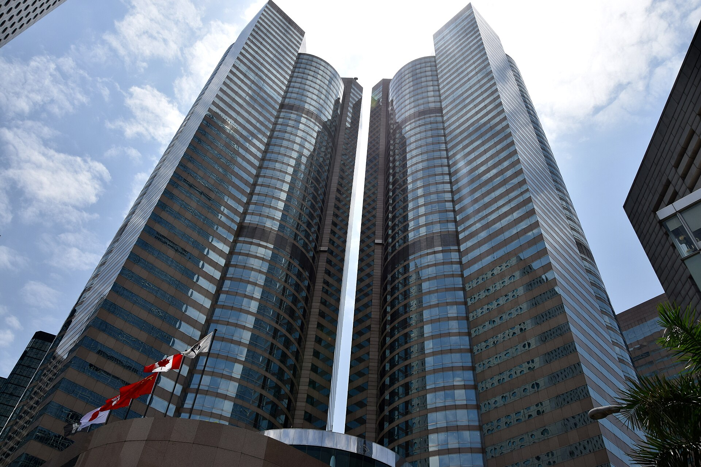
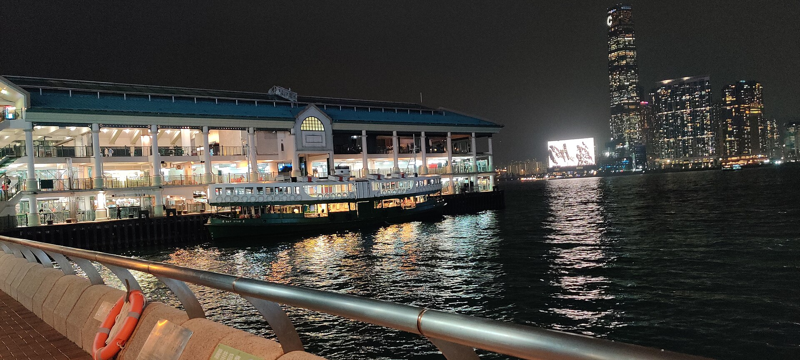

350隻跌，
207隻升。
10月15日名單已整理好。
今日只剩 3 個免費名額
今日只剩 3 個免費名額
10月14日恒指收 24,314.17，跌 0.13%。升股 207 隻，跌股 350 隻，指數幾乎企穩，大多數股份並沒有。
24314.17恒生指數，跌 31.05 點，−0.13%
4174.47恒生科技指數，升 37.84 點，+0.91%
8183.17國企指數，升 0.10%
1374億港元，綜合指數成份股成交，較上日多約 7.7%
1.35億港元，北水淨賣出，連續第二日
指數
指數微跌，大部分股份都跌
207 隻升，350 隻跌，24 隻平
中位數變幅 −0.67%
恒生科技收 4,174.47，升 0.91%
指數跌得少，個股可以跌更多
北水
北水再淨賣出 1.35 億
港股通（滬）淨賣出 0.81 億
港股通（深）淨賣出 0.54 億
賣出集中喺中芯國際
長飛光纖光纜
小米集團
跟資金方向比跟大市更重要
成交
成份股成交約 1,374 億港元
較上日多約 7.7%
國企指數 8,183.17，升 0.10%
開市前先睇邊類有資金
港股360
智通財經
財聯社
METROHK



目前選擇：潛力黑馬 · 打開後按「發送」即收
完全免費 · 唔使填任何資料 · 打開後按發送
每日開市前更新 · 內容按公開市場資訊整理
揀好方向，打開 WhatsApp 後直接按發送，即可免費領取完整名單。
免費領取今日潛力黑馬名單